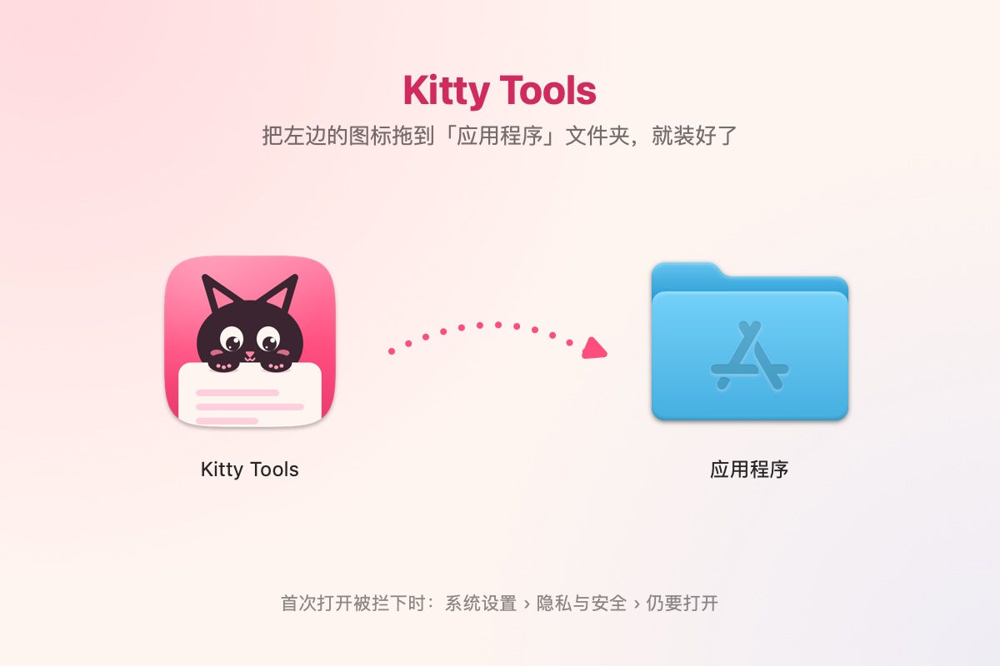

下载 Kitty Tools
免费。Mac 版和 Windows 版各写一套，样子和用法尽量对齐。装好之后，新版本都在 App 里一键更新。
Mac 版怎么装
三步。只有第一次安装需要放行，之后的新版本在 App 里更新。
-
把 Kitty Tools 拖进「应用程序」
打开下载好的 DMG，把左边的 Kitty Tools 拖到右边的「应用程序」文件夹。
装过同名旧版的，先删掉「应用程序」里旧的 Kitty Tools，或者让访达替换。

-
第一次打开，会被系统拦下
在「应用程序」里双击 Kitty Tools，系统会提示「未打开」。这是因为 Kitty Tools 没有经过苹果的公证；签名是有效的，所以提示不是「已损坏」。点「完成」关掉提示就好。
-
到系统设置里点「仍要打开」
打开「系统设置 › 隐私与安全性」，往下拉到「安全性」，点 Kitty Tools 旁边的「仍要打开」，再输入登录密码。这个按钮在尝试打开后约 1 小时内有效，过了就再双击一次 App。
另一种办法：用「终端」
打开「终端」，粘贴下面这行并按回车，之后就能直接双击打开：
xattr -dr com.apple.quarantine "/Applications/Kitty Tools.app"示意图，各版本系统的样子略有不同
第一次打开要给的权限
欢迎引导会带你一项项开。每项权限只拿来做下面写的事，不给也能用其余功能。
- 辅助功能
- 把选好的内容粘贴回原来的 App、划词翻译、用译文替换原文、长截图自动滚动、录屏时显示按键、程序坞预览。
- 屏幕录制
- 截图、截图翻译、识字、长截图、录屏、录系统声音、程序坞预览的缩略图。授权后可能要重新打开一次 App。
- 麦克风
- 录屏、录音时录下你的声音。第一次用到时才问。
- 文件和文件夹
- 只在启动器搜文件时按需申请。
- 完全磁盘访问权限（可选）
- 只有想在启动器里搜 Safari 的书签和历史时才需要。
新装或系统大版本更新后，第一次识字前系统要先准备识字模型，大约一分钟；App 启动后会在后台自己准备好。
以后怎么更新
有新版本时，菜单栏里会出现「更新到 x.y.z…」；也可以在 设置 › 关于 里点「更新并重新打开」。一键更新，不用再放行。想手动更新的话，下载新的 DMG 覆盖安装也行。
每一版改了什么，看更新日志。
怎么卸载
在菜单栏的猫上点右键，选「退出」，再把「应用程序」里的 Kitty Tools 拖进废纸篓。
要把数据也清掉：删掉 ~/Library/Application Support/com.yy.kitty-tools.native（剪贴板历史、便签、截图历史、备份都在这里，设置 › 通用 里能直接在访达中打开）和 ~/Library/Preferences/com.yy.kitty-tools.native.plist；翻译服务的密钥在「钥匙串访问」里，名称是 com.yy.kitty-tools.native。
Windows 版怎么装
- 下载安装程序（ARM 处理器的电脑下载 ARM64 那个），双击运行。
- 出现「Windows 已保护你的电脑」时，点「更多信息」，再点「仍要运行」。
- 默认装到
%LOCALAPPDATA%\Programs\Kitty Tools，不需要管理员权限。以后在程序里自动更新。
不想安装：下载 zip，解压到任意位置，双击 KittyTools.exe。
Windows 版怎么卸载
设置 › 应用 › 已安装的应用 › Kitty Tools › 卸载。
Windows 版有哪些功能
剪贴板历史、翻译、启动器、截图（含长截图和截图历史）、录屏与录音、主界面。便签、启动台、状态屏、程序坞预览和刘海岛目前只有 Mac 版有。
以前的版本、校验文件和每一版的完整说明都在 GitHub 发布页。下载慢的话，看常见问题。